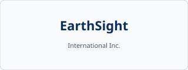
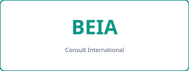

NADIR launches under ITEA 4
The consortium begins work on a software-intensive platform for natural-hazard risk intelligence, combining Earth observation with ground-based and contextual data.
NADIR is an ITEA 4 collaborative R&D project developing advanced risk assessment capabilities—combining satellite data with ground truth—to support monitoring, prediction, and mitigation of large-scale natural disasters.
Climate-related extremes—including wildfires, flash floods, and prolonged drought—pose growing risks to lives, infrastructure, and public health. NADIR addresses this need by building a platform-oriented approach to deliver actionable risk intelligence for civil protection, insurers, and decision-makers, grounded in Earth observation and complementary data.
The project is part of the ITEA partnership, which supports pre-competitive innovation in software-intensive systems across industry and academia in Europe and partner countries.
Project updates and milestones. Add new items by copying a article.news-item
block in index.html.
The consortium begins work on a software-intensive platform for natural-hazard risk intelligence, combining Earth observation with ground-based and contextual data.
Partners aligned on architecture priorities and interoperability goals for shared analytics and delivery to downstream users.
This site provides a single entry point for NADIR news, partner information, and links to the official ITEA programme materials.
Nine organisations across five countries contribute to NADIR. Verify the latest list on
the official ITEA project page. Logo
files in assets/partners/ are placeholders—replace with approved brand
assets where required.
Canada
Leads the project and contributes Earth observation analytics, platform vision, and coordination across the consortium.
earthdaily.comCanada
Brings industrial technology and integration experience relevant to reliable sensing, automation, and operational systems.
global.abb
Canada
Contributes applied EO and geospatial insight for hazard monitoring and risk-related use cases.
Portugal
Supports software, data, and innovation activities aligned with the project’s product and dissemination goals.
Portugal
Instituto Superior de Engenharia do Porto contributes research and engineering capacity in intelligent systems and applications.
isep.ipp.ptPortugal
Portuguese industry partner contributing to technical work packages and validation aligned with ITEA objectives.
Republic of Korea
Adds space-technology and satellite-related R&D perspectives to the consortium’s Earth observation roadmap.
naraspace.com
Romania
Contributes ICT consulting, integration, and dissemination experience across European collaborative projects.
beia.euUnited Kingdom
Brings insurance and risk-transfer domain knowledge to connect analytics outputs with market and resilience stakeholders.
forestre.comThe project runs in the ITEA 4 framework. Public listings indicate an execution period from April 2024 to March 2028—confirm dates on the official ITEA record for any reporting or contractual use.